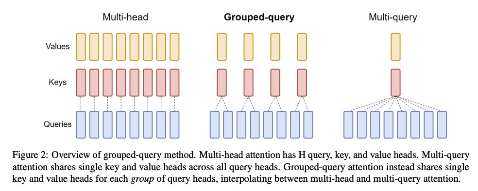
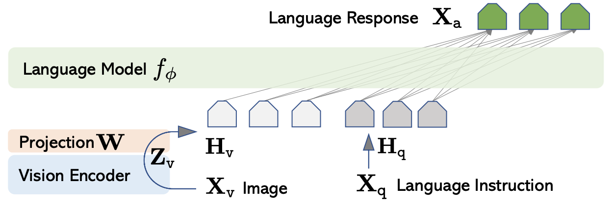

架构¶
GPT 系列模型的基础架构请参阅 LLM Visualization。
位置嵌入¶
输入嵌入包括 token 嵌入和位置嵌入。这是因为自注意力机制（乃至整个 transformer）并不存在处理位置等信息的机制，token 的所有信息都必须写入到输入向量中。
位置嵌入考虑绝对位置和相对位置，但 token 的绝对位置并不重要——token 并不会因为它的绝对位置而被赋予什么含义；换个角度想，训练中一个 token、句子或段落出现在上下文窗口中的位置是随机的，绝对位置实际上没有什么意义。并且在越来越长的上下文窗口中，对于绝对位置的编码也难以形成差异。
2104.09864 提出的 RoPE（Rotary Position Embedding）采用了相对位置，并且在计算上简单高效。
RoPE 实质上就是，对查询向量 \(\pmb q_m\) 和键向量 \(\pmb k_m\) 的元素进行两两分组，每组视作一个二维向量，然后左乘矩阵
即在实平面中逆时针旋转一个角度 \(m\theta\)。之后对 \(\pmb q_m\) 和 \(\pmb k_n\) 计算点积，可以视作相应组作点积再求和，因此对于相距越远的 \(m\) 和 \(n\)，旋转角度差 \((m-n)\theta\) 越大，点积 \(\pmb q_{m,[j]}\cdot\pmb k_{n,[j]}=\vert\pmb q_{m,[j]}\vert\vert\pmb k_{n,[j]}\vert\cos\alpha\) 因为夹角 \(\alpha\) 变化而产生的变化越大，其中 \([j]\) 表示第 \(j\) 组。
注意力头¶
- MHA（多头注意力）（多个 q、k、v 头）[1706.03762]
- MQA（多查询注意力）（多个 q 头，一个 k、v 头；大幅提升计算速度，但造成模型表现下降以及训练不稳定）[1911.02150]
- GQA（分组查询注意力）（每组多个 q 头，一个 k、v 头；计算速度接近 MQA，模型表现接近 MHA）（llama 3 采用）[2305.13245]

多模态¶
-
LLaVA（首个开源 MLLM）[2304.08485]
-
模型架构如下：

其中 Vision Encoder 是预训练的 CLIP ViT-L/14 模型。 * 模型训练分为两个阶段： 1. 预训练以对齐特征。数据构造方法为，对于一个图像标题对 (image, caption)，从预先编写好的若干个描述图像的指令中抽取一个指令 instruction，
USER: [image][instruction]<STOP>Assistant: [caption]<STOP>即为一个样本。可训练参数为 \(W\)。 1. 端到端地微调。数据构造方法为，对于一个图像 image，产生它的 5 个标题和对象检测结果作为上下文 context（如何产生？），使用 GPT-4 生成相应的 response，prompt 采用SYSTEM: [system message]<STOP>USER: [context1]<STOP>Assistant: [response1]<STOP>...USER: [context]<STOP>Assistant:，其中 system message 有三种类型，(context1, response1) 等为 few-shot 的示例，详见 prompts。可训练参数为 \(W,\phi\)。
-
-
LLaVA 的改进[2310.03744]
- 将线性投影改为两层 FFN，以提升多模态能力。
- 增加数据集，以加强模型多方面的能力：
- outside-knowledge VQA：结合外部知识。
- OCR：识别图像中的文字。
- region-level VQA：定位到细节。
- 提高输入图像的分辨率（Vision Encoder 换用 CLIP ViT-L/14-336px），使得 LLM 能够看到更多细节。
- 扩大 LLM 的规模。
- 对于简短的回答，在相应的问题末尾附加“Answer the question using a single word or phrase”。这样微调出来的模型可以根据用户指令适当地调整输出格式（长短）。
- Mini-Gemini（）[2403.18814]
- GPT-4o（）
- Chameleon（原生多模态模型）
附图像嵌入方法：

实现¶
MoE¶
- MoE（混合专家网络）[1701.06538]
MoE 层由一组 n 个专家网络 \(E_1,\cdots,E_n\)，和一个门控网络 \(G\) 组成。这些专家都有各自的参数；尽管原则上我们只需要专家接受相同大小的输入并产生相同大小的输出，但在研究和实践中通常设定所有专家都是具有相同架构的 FNN。设 \(G(x)\) 和 \(E_i(x)\) 分别表示门控网络和第 \(i\) 个专家网络对于给定输入 \(x\) 的输出，则 MoE 层的输出 \(y\) 可以写成如下形式：
门控网络的计算如下：
在应用 Softmax 函数之前，我们添加可调的高斯噪声，然后仅保留最大的 \(k\) 个值，将其余值设为 \(-∞\)。这种稀疏性有助于减少计算量。噪声有助于负载均衡；噪声量由另一个可训练的权重矩阵 \(W_{noise}\) 控制。
MoE 层与模型的剩余部分一起，通过简单的反向传播训练。在数据并行的基础上每个 GPU 有且仅有一个专家，GPU 之间通信专家的输入输出。这使得专家数量（以及参数量）随着 GPU 数量的增加成比例增加，每个专家的 batch size 保持稳定，每个 GPU 的显存和带宽使用也保持固定。为了维护计算效率，专家的计算量与其输入输出大小的比率必须超过 GPU 的计算能力与其网络容量的比率。
门控网络倾向于收敛到总是为相同的几个专家产生大的权重。这种不平衡是自我强化的，因为受偏爱的专家会更快地被训练，从而被门控网络更频繁地选择。为了负载均衡，MoE 层采取软约束的方法，定义重要性和相应的损失项如下：
其中 \(X\) 为一个 batch 的训练样本，\({\rm CV}\) 为变异系数，\(w_{\rm importance}\) 是一个超参数。这个额外的损失项鼓励所有专家有相等的重要性。
尽管上述损失项可以确保相等的重要性，专家仍然可能收到数量非常不同的样本。例如，一个专家可能收到一些大权重的样本，而另一个则可能接到许多小权重的样本，从而导致分布式硬件上的内存和性能问题。为了解决这个问题，第二个损失项 \(L_{\rm load}\) 被引入，详见原论文的附录 A。
实现¶
新架构¶
-
RWKV（）[2305.13048]
-
YOCO（You Only Cache Once）[2405.05254]
-
https://arxiv.org/pdf/2405.09818